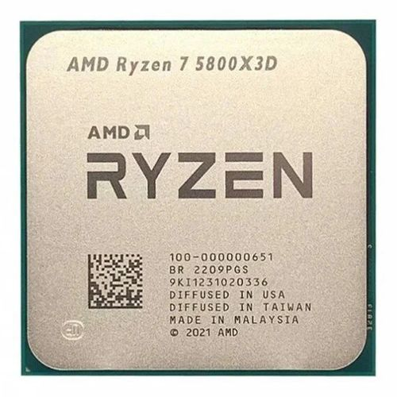
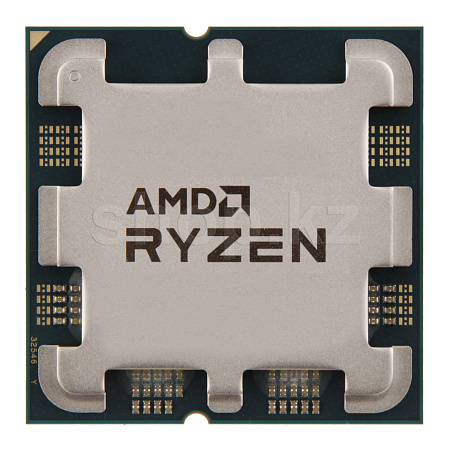
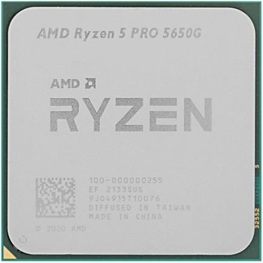

Что означают все эти буквы и цифры в названии процессора? Сейчас разберемся.
У AMD и Intel все очень похоже. Сначала идёт линейка, у нас актуален только RYZEN.



Дальше илёт индекс семейства: 3 5 7 9. От офисного до ультрапроизводительного.
Затем поколения, до 7 (самого актуаленого)
Последние 3 цифры это производительность в рамках 1 поколения, так же как и у Intel, больше лучше.
Отличие от Intel есть в последнем индексе, некоторые буквы по значению отличаются, а возможность разгона никак не обозначается, так как все настольные процессоры Ryzen имеют разблокированный множитель, то есть их всех можно разогнать.
Вот и всё